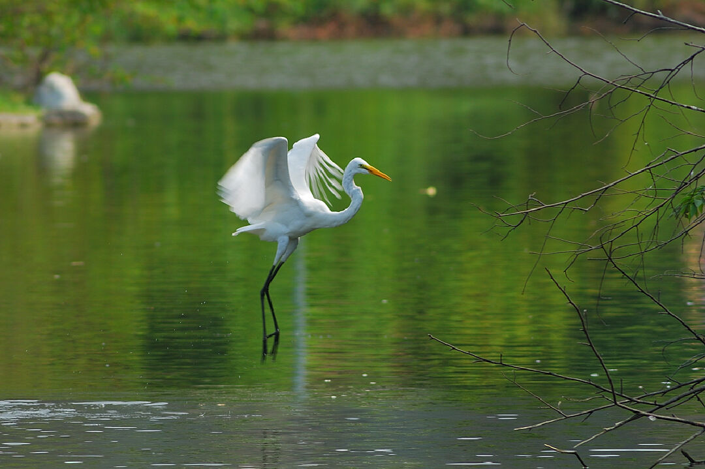
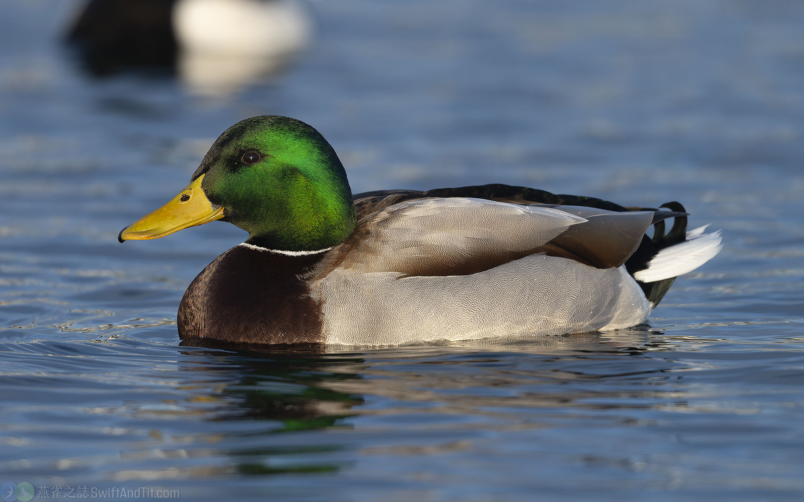

在地原生物種紀錄
埤塘是都市中珍貴的生物棲地。以下整理本園區常見且具代表性的動植物。
🌱 挺水與水生植物
• 香蒲（水蠟燭）：典型挺水植物，根系能吸附水中雜質，是淨化池的要角。
• 睡蓮與台灣萍蓬草：浮葉植物，提供水面遮蔭，調節水溫。
• 水社柳：濕地原生喬木，穩固岸邊土壤。
🐦 鳥類與水域動物
• 大白鷺：體型最大的白鷺，頸長呈S型，黃色嘴喙、黑色腳趾。
• 蒼鷺：大型灰色鷺，頭白具黑色冠羽過眼線，常靜立淺水捕魚。
• 夜鷺：常佇立水邊靜待獵物，清晨黃昏最活躍。
• 綠頭鴨：常見大型水鴨,公鳥頭頸亮綠、有白頸環,母鳥為樸素褐色,是家鴨的祖先。
📷 鳥類照片紀錄

大白鷺

蒼鷺

夜鷺
